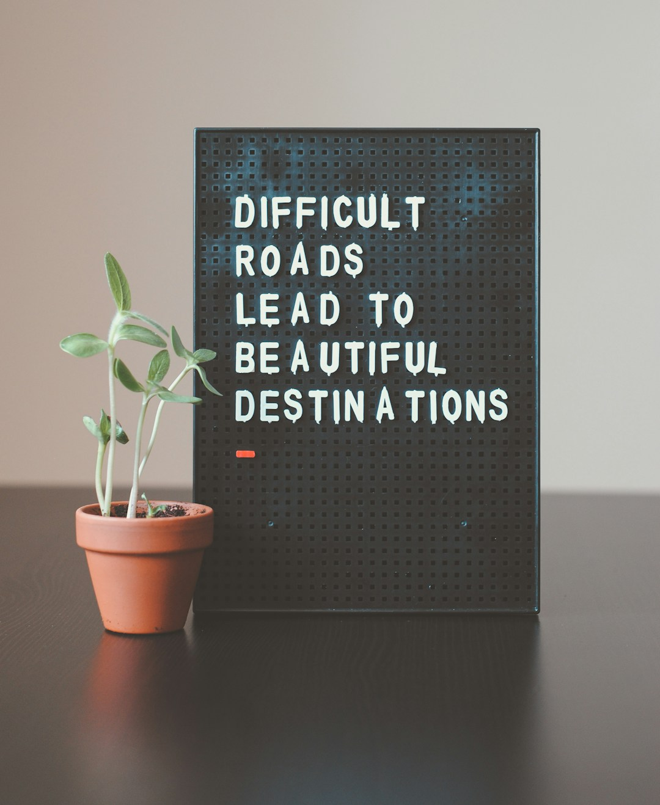

Reclaim
Recupera quien eres mas alla de roles, expectativas y patrones antiguos.
Coaching para lideres, profesionales y duenos de negocio que navegan transicion, reinvencion, crecimiento y cambio.

No estas aqui por accidente.
A veces un rol ya no encaja. A veces el exito por fuera ya no se siente alineado por dentro. Y a veces simplemente sabes que hay un proximo capitulo, pero todavia no puedes ver el camino con claridad.
Ahi es donde comienza este trabajo.
No soy solo una coach. Soy alguien que ha vivido transicion, incertidumbre y reinvencion. Este trabajo es personal para mi porque nacio primero de mi propio camino de realineacion y crecimiento.
A traves de mi coaching, te ayudo a reconectar con quien eres, realinearte con lo que mas importa y avanzar con claridad y confianza, sin perderte en el proceso.
Mi enfoque combina reflexion, conversacion honesta y herramientas practicas para que la claridad se convierta en accion y el cambio se convierta en transformacion vivida.

Esto no es coaching superficial. Es una transformacion guiada.
La experiencia Unlock Potential Coaching Experience™ es un recorrido de 8 sesiones disenado para ayudarte a navegar transiciones de vida y carrera con claridad, alineacion de energia y accion intencional.
Usando mi Unlock Potential Method™ y el marco R.E.A.C.H.™, vamos mas alla de las metas: nos enfocamos en ti.
Durante tus sesiones, avanzaremos por un proceso poderoso. Cada sesion construye sobre la anterior, combinando reflexion profunda, conversacion honesta y herramientas practicas que puedes usar en tu vida diaria. Porque el cambio real no ocurre haciendo mas. Ocurre cuando te alineas.
Recupera quien eres mas alla de roles, expectativas y patrones antiguos.
Explora lo que te llama hacia adelante y lo que mas importa ahora.
Alinea tu energia, valores y decisiones para que el crecimiento sea sostenible.
Comprometete con accion intencional y cambio significativo.
Honra tu progreso y entra a tu proximo capitulo con mayor confianza.
Este coaching apoya crecimiento de liderazgo, transiciones profesionales, alineacion de vida y carrera, manejo de energia y desempeno, y los retos particulares que enfrentan profesionales de alto rendimiento y duenos de negocio en temporadas de cambio.
Cuando sea relevante, se pueden usar herramientas de evaluacion para profundizar autoconocimiento, fortalecer comunicacion y aumentar la comprension de patrones conductuales que influyen en el desempeno y las relaciones.
El coaching tambien apoya la forma en que te presentas dentro de equipos y organizaciones, ayudando a mejorar colaboracion, fortalecer presencia de liderazgo y crear relaciones de trabajo mas saludables y efectivas.
Una sesion de descubrimiento puede ayudar a aclarar el mejor punto de partida y dar forma a un camino de coaching alrededor de tus metas.